Lattice models of theta-shaped polymers and other branching structures
Nicholas Beaton, James Gleeson and Aleks Owczarek
Monte Carlo Algorithms in Statistical Mechanics @ MATRIX
June/July 2023
Summary
Introduction
Self-avoiding walks
A self-avoiding walk (SAW) $\omega$ is a sequence of lattice vertices $(\omega_0, \omega_1, \dots, \omega_n)$ such that $\omega_i \neq \omega_j$ for $i\neq j$, and $\omega_i,\omega_{i+1}$ are adjacent on the lattice for each $i=0,\dots,n-1$. We say $\omega$ has size $|\omega| = n$.
 |
Since the lattice is vertex-transitive, if one SAW is a translation of another we consider them to be the same. Equivalently assume $\omega_0 = 0$.
For a given lattice take $c_n$ to be the number of SAWs of size $n$. Then e.g. on the square lattice \[ (c_n)_{n\geq0} = (1, 4, 12, 36, 100, 284, 780, \dots) \]
Self-avoiding polygons
A self-avoiding polygon (SAP) $\pi$ is a sequence of lattice vertices $(\pi_1, \pi_1, \dots, \pi_{n})$ such that $\pi_i \neq \pi_j$ for $i\neq j$, and $\pi_i,\pi_{i+1}$ are adjacent on the lattice, and so too are $\pi_1,\pi_n$. The size of $\pi$ is $n$.
Equivalently a SAP is a SAW which ends adjacent to its initial vertex.
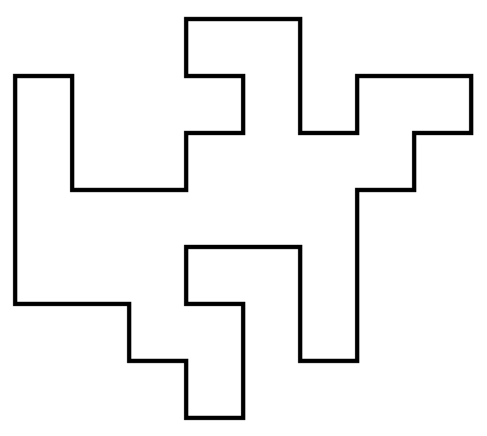For our purposes two SAPs are the same if they are translates of one another. So there are $2n$ SAWs (of length $n-1$) corresponding to each SAP of size $n$. Let $p_n$ be the number of size-$n$ SAPs. Then e.g. on the square lattice \[ (p_n)_{n\geq4} = (1,0,2,0,7,0,28,0,124,\dots) \] (On the triangular and fcc lattices SAPs can have odd size.)
Thetas and tadpoles
SAPS have all vertices of degree 2 while SAWs have two vertices of degree 1. Here we introduce vertices of degree 3: thetas (two vertices of degree 3) and tadpoles (one degree 1 and one degree 3).
| 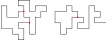 |
Again counted up to translation. On the square lattice \begin{align*} (\theta_n)_{n \geq 7} &= (2, 0, 12, 6, 62, 60, 338, 430, 1966, \dots) \\ (\varphi_n)_{n \geq 5} &= (8, 24, 84, 244, 740, 2072, 6004, \dots) \end{align*}
Lattices
 |
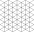 |  |
On the square and cubic lattices, the three "arms" of a theta must have the same parity $\rightarrow$ strong parity effects. Not a problem on the triangular or fcc lattices.
Motivation
Polymer models
Conception for SAWs is usually credited to Paul Flory (J. Chem Phys. 1949). He was interested in a theoretical model for long linear polymer chains in solution. In particular he wanted a model which accounted for the excluded volume principle: the idea that two monomers in a chain cannot occupy the same space.
 |
 |
| poly(2-vinylpyridine) (Y. Roiter & S. Minko, J. Amer. Chem. Soc. 2005) | square lattice SAW of length $2^{25}$ (N. Clisby 201?) |
SAWs (or SAPs, trees, etc., depending on the model) turn out to be a good model for polymers in a good solvent (at least for long ones).
Knots
Headphone cables, shoelaces, necklaces, and even polymer molecules can get tangled up in knots and links.
H.L. Frisch and E. Wasserman (J. Amer. Chem. Soc. 1961) and M. Delbruck (Proc. Symp. Appl. Math. 1962) conjectured that random simple closed curves in $\mathbb{R}^3$ will be knotted with high probability. More precisely, the probability of being unknotted decays exponentially with the length of the curve.
 |
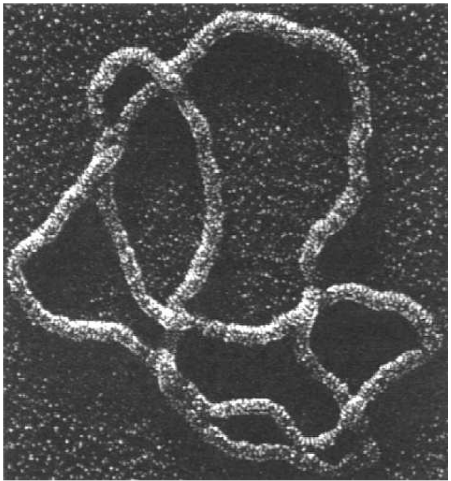 |
| (S.A. Wasserman et al, Science 1985) |
The FWD conjecture was first proved by D.W. Sumners and S.G. Whittington (J. Phys. A: Math. Gen. 1988) for SAPs on the cubic lattice. Their method used pattern theorems.
Subsequently proved for a number of other models (on and off the lattice).
The size of knots
Knots are very likely because small "knotted parts" can be inserted into a polygon and force it to be knotted. But in turn the "knotted part" of a typical large knotted polygon is relatively small.
| 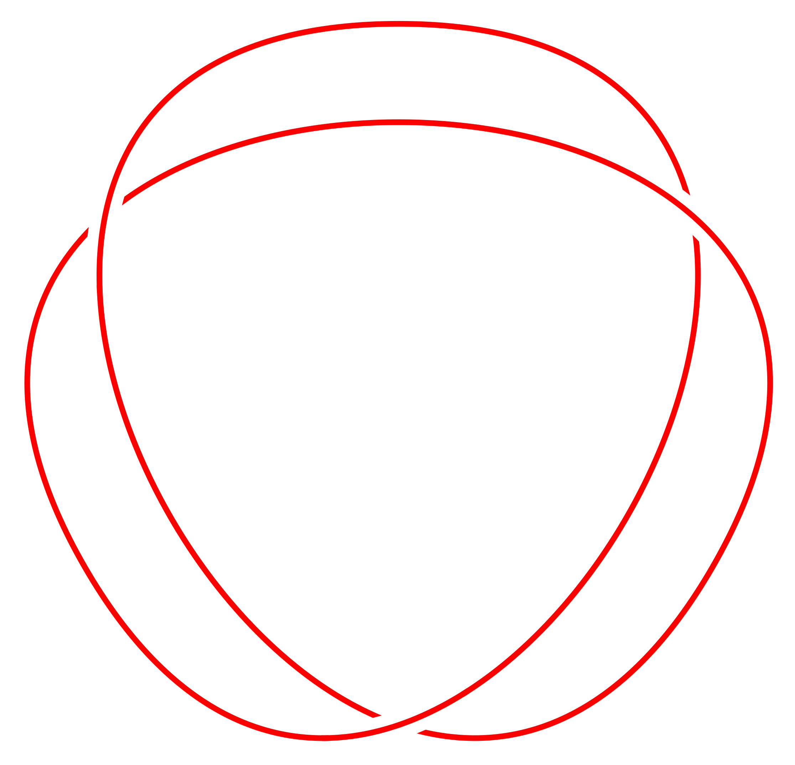 | 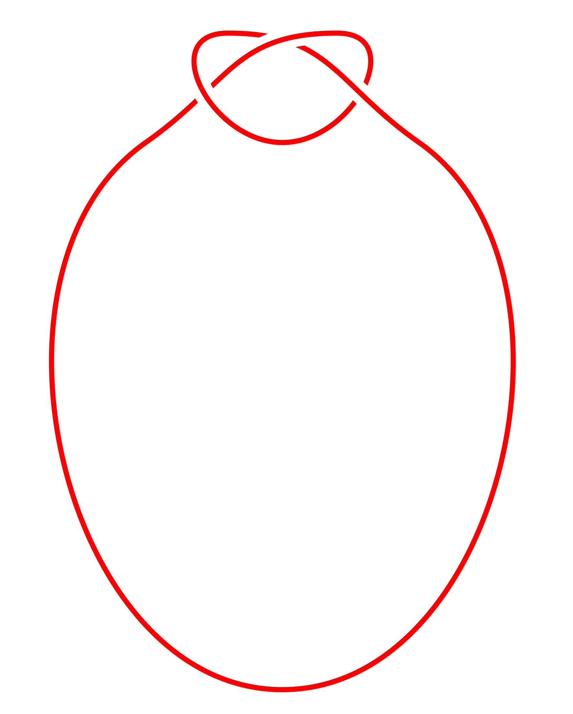 |
Different ways to estimate the "size" of the knotted part. Marcone et al (J. Phys. A 2005) use two different methods:
| 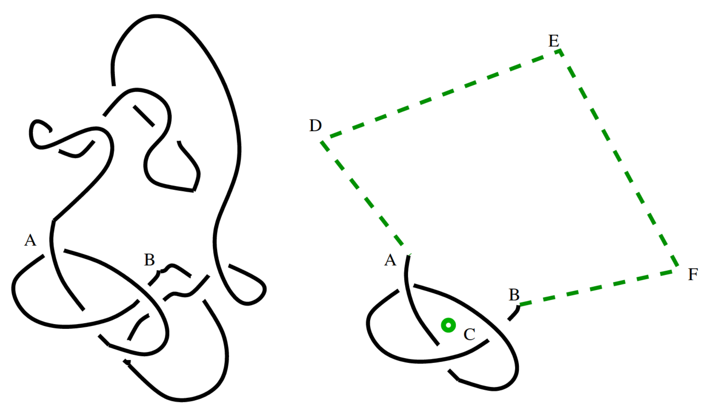 |  |
Both methods lead to an estimate of the knotted part of an $n$-edge prime knot occupying $\approx n^{0.75}$ edges.
Knots vs. thetas
Question: How do the different parts of a typical theta scale in size? Most likely two arms are small and one big:
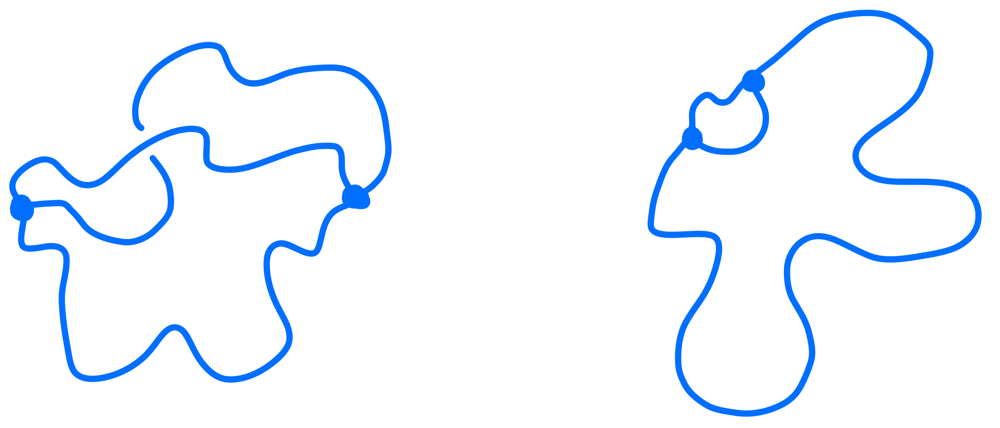R-loops
During DNA transcription, single-stranded RNA can fuse with double-stranded RNA to form R-loops:
| 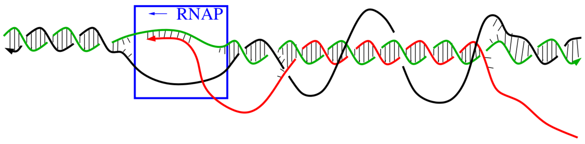 |
| Jonoska et al, Using Mathematics to Understand Biological Complexity 2021 |
| 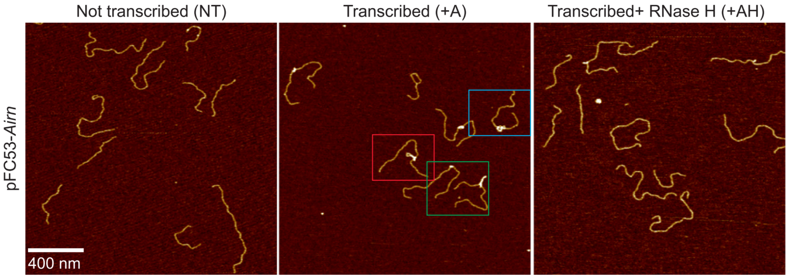 |
| Carrasco-Salas et al, Nucleic Acids Res. 2019 |
The presence of R-loops can affect repair, eg. in human cells.
R-loops
Topologically the DNA:RNA hybrid is a graph with two vertices of degree 3 or 4:
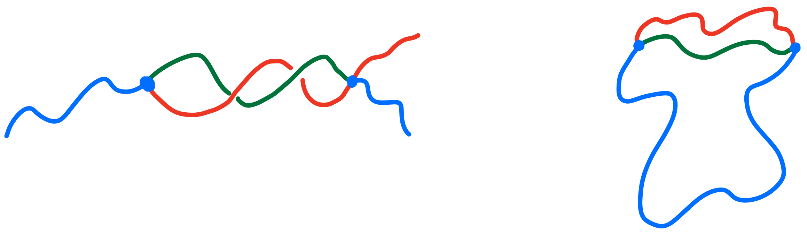Different parts are single- or double-stranded so may have different stiffness etc.
Knotted theta-graphs
Thetas can also have non-trivial topology -- open questions about minimum number of edges required, etc.
| 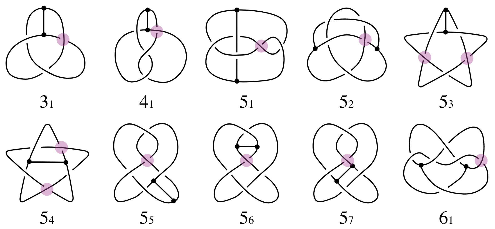 |
| Buck & O'Donnol 2018 |
Monte Carlo methods
BFACF algorithm
The BFACF algorithm (Berg & Foester 1981, Aragão de Carvalho, Caracciolo & Fröhlich 1983 and 1983) is a method for sampling SAWs and SAPs which preserves topology.
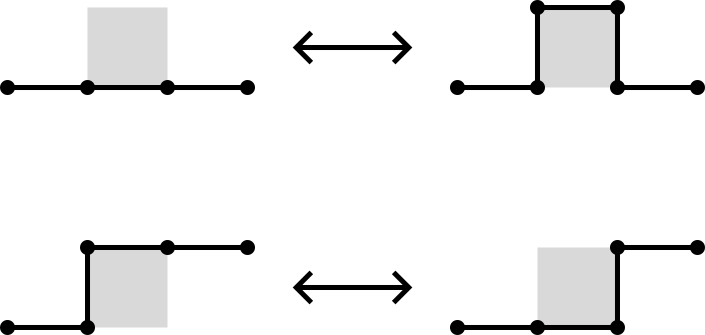For 2D SAPs it is ergodic while in 3D the ergodicity classes are the knot types. For SAWs the ergodicity classes are walks between two fixed endpoints.
Also works on the triangular lattice.
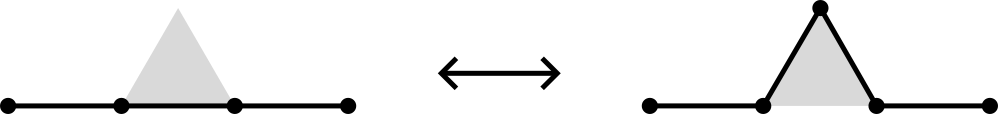BFACF algorithm
For the fcc and bcc lattices, Janse van Rensburg and Rechnitzer (2011) found a set of moves which also give the knot types as the ergodicity classes.
| 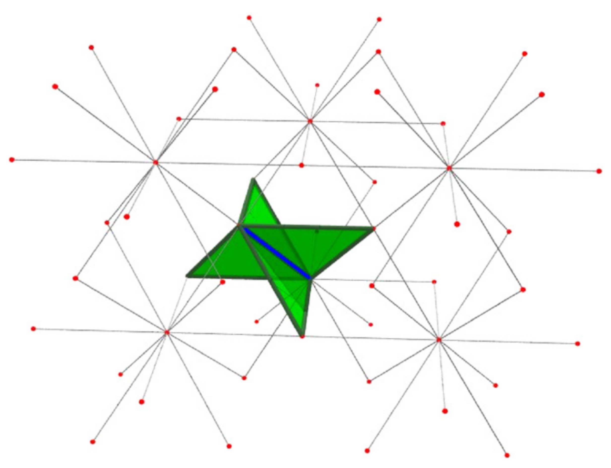 | 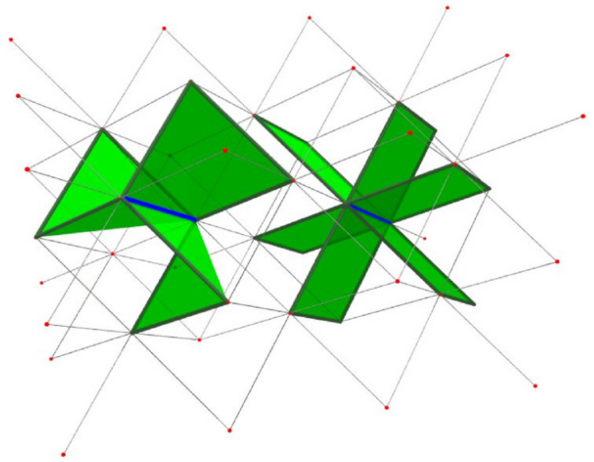 |
BFACF for branched structures
The above BFACF moves can shift vertices of degree 2 and leave vertices of degree 1 fixed.
To accommodate vertices of degree 3, Sokai (2018) found a new set of moves on the square/cubic lattices which can realise any ambient isotopic transformation:
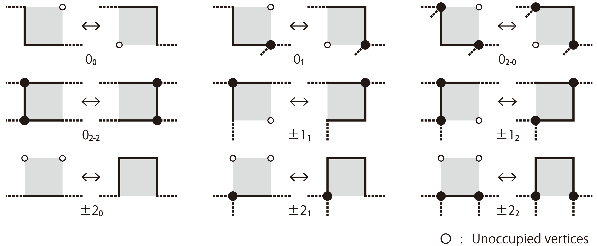Note that the degree 3 vertices can move around.
BFACF for branched structures
Simpler on the triangular lattice:
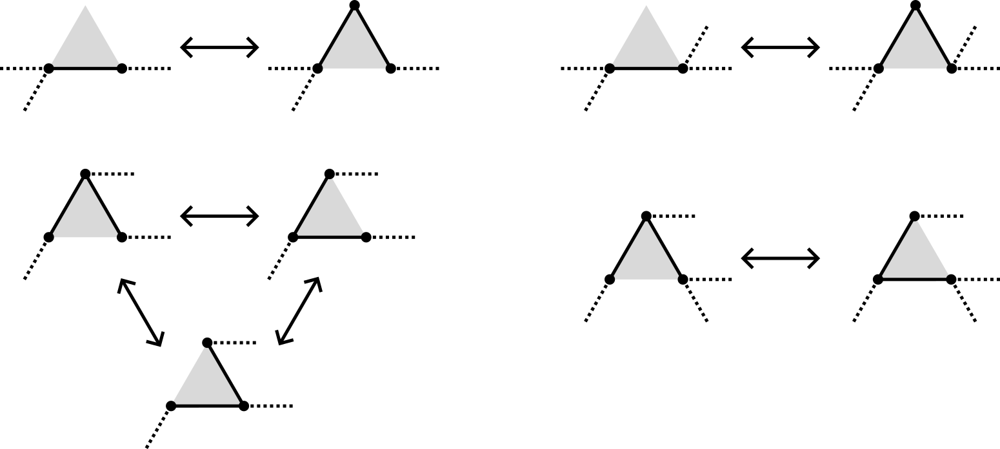Same moves on the fcc lattice since the faces are still triangles.
Wang-Landau method
We combine the BFACF moves with the Wang-Landau method (2001) to estimate the number $a_n$ of configurations of size $n$.
Start with $f=1$ and arrays $G$ and $H$ both all $0$.
- For a given configuration $\gamma$, pick a random edge and a random adjacent plaquette. If there is a valid BFACF move, accept with Metropolis probability \[ \mathbb{P}(\gamma \to \gamma') = \min\{1, \exp(G(|\gamma|) - G(|\gamma'|))\},\] else stay in state $\gamma$.
- Now in state $\gamma''$ (either $\gamma$ or $\gamma'$), increment $G(|\gamma''|)$ by $f$ and $H(|\gamma''|)$ by 1.
- If $H$ is sufficiently flat, decrease $f$ (e.g. $f \mapsto f/2$), reset $H=0$ and start again. Otherwise continue with the current value of $f$.
- When $f$ reaches some small threshold, terminate.
If $m$ is the size of the smallest configuration, set $g=G(m)$ and then for each $n$ set \[ A(n) = \exp(G(n) - g)\cdot a_m\cdot m/n. \] Then $A(n) \approx a_n$.
Wang-Landau method
Easily generalises to measure more than just size -- e.g. we will estimate $\theta_{n,k}$, the number of thetas of size $n$ with shortest arm of size $k$.
Many other variations -- e.g. change how $f$ decreases, or tune $G$ and then use those values to estimate some other quantity.
(Preliminary) Results: Thetas
The number of thetas
The number $p_n$ of SAPs on the lattice is $\sim \text{const.} n^g \mu^n$ where (Guttmann 2009) \[ g = \begin{cases} -5/2 & d=2 \\ -2.76279 & d=3 \end{cases} \] and $\mu$ is the connective constant of the lattice (Jensen 2004, Clisby 2022): \begin{align*} \mu_\text{tri} &= 4.150797226(26) \\ \mu_\text{fcc} &= 10.03705785(14) \end{align*}
Expect $\theta_n \sim \text{const.}n^h \mu^n$ for the same $\mu$.
The number of thetas
Estimating the exponent $h$ for the triangular lattice (10 independent runs, $N=500$):
$h \approx g+1$ $\leftrightarrow$ $O(n)$ places to position a small loop within a big polygon.
The number of thetas
Estimating the exponent $h$ for the fcc lattice (10 independent runs, $N=300$):
Again $h \approx g+1$.
Note that these thetas are unknotted so should really use $\mu_0$ but don't have an estimate for that.
Mean length of shortest theta arm
If $\sigma(\theta)$ is the length of the shortest arm then expect (?) $\langle \sigma \rangle_n \sim \text{const.}n^s$ for some $s$. Estimating $s$ for the triangular lattice (10 independent runs, $N=500$):
Mean length of shortest theta arm
Estimating $s$ for the fcc lattice (10 independent runs, $N=300$):
Still some curvature $\rightarrow$ $s \approx 0.75$ is very plausible.
Mean length of two shortest theta arms
Can also look at $\tau(\theta)$, the sum of the two shortest arms. Triangular lattice (10 independent runs, $N=400$):
Likely the same exponent as for shortest arm.
Mean length of two shortest theta arms
fcc lattice (10 independent runs, $N=300$):
Likely the same exponent, more data may help.
Samples
$N=200$
Samples
$N=120$
(Preliminary) results: tadpoles
The number of tadpoles
The number $c_n$ of SAWs on the lattice is $\sim \text{const.} n^{\gamma-1}\mu^n$ where (Clisby 2017) \[ \gamma = \begin{cases} 43/32 & d=2 \\ 1.15695300(95) & d=3 \end{cases} \]
Expect $t_n \sim \text{const.}n^r \mu^n$ for some $r$.
The number of tadpoles
Estimating $r$ for the triangular lattice (10 independent samples, $N=300$):

Note that $\gamma-1 = 11/32 = 0.34375$.
The number of tadpoles
Estimating $r$ for the fcc lattice (10 independent runs, $N=200$):
Note that $\gamma-1 = 0.156953$.
Mean size of tadpole head
Let $\eta(\varphi)$ be the number of edges in the "head" of a tadpole $\varphi$. How does $\langle \eta \rangle_n$ scale? Still a power law? Triangular lattice (10 independent samples, $N=300$)
Small exponent and still some curvature... not so convincing.
Mean size of tadpole head
Try for $\log$ instead of power law:
More convincing (?)
Mean size of tadpole head
Repeating for fcc lattices (10 independent runs, $N=200$), trying a power law:
Mean size of tadpole head
Trying log scaling:
Inverted tadpoles
In 2D there are two different topologies for tadpoles: "regular" and "inverted"
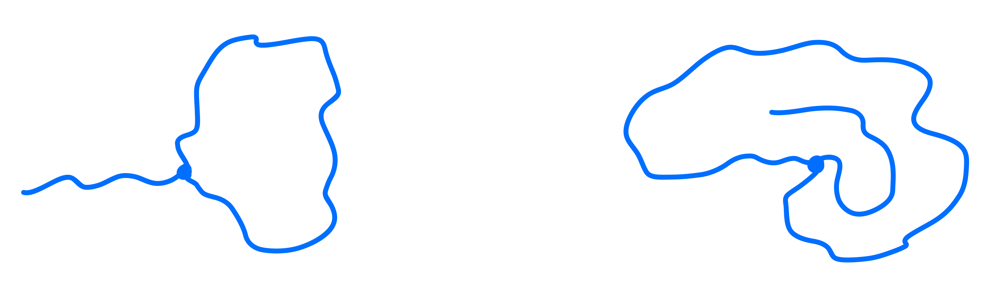All the previous data was for regular tadpoles.
Let $i_n$ be the number of inverted tadpoles.
Expect different behaviour -- regular tadpoles are long SAWs with a little loop, but with inverted there is competition between the size of the head and tail?
The number of inverted tadpoles
Harder to sample -- configurations at either extreme of head/tail size are very rare. Estimating exponent for triangular lattice (10 independent runs, $N=100$):
Mean size of inverted tadpole head/tail
Seems that both head and tail scale as $O(n)$ (10 independent runs, $N=100$):
Samples
$N=150$
Samples
$N=100$
Samples
$N=50$
Future work
- More data! Square and cubic lattices too
- Other shapes?
- How do knots affect things?
- Minimum sizes of prime theta knots
- Introduce weights to model R-loops
- Improve the algorithm (GAS? pivots?)